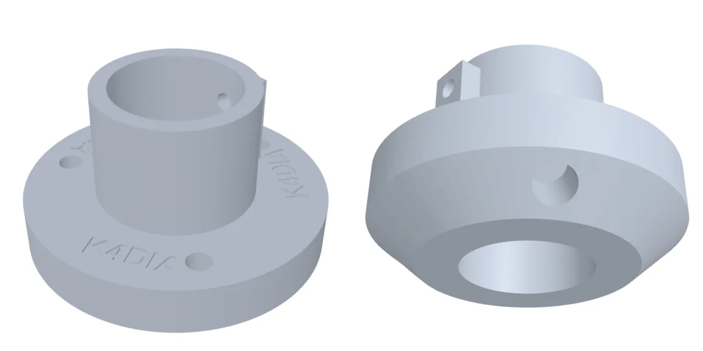
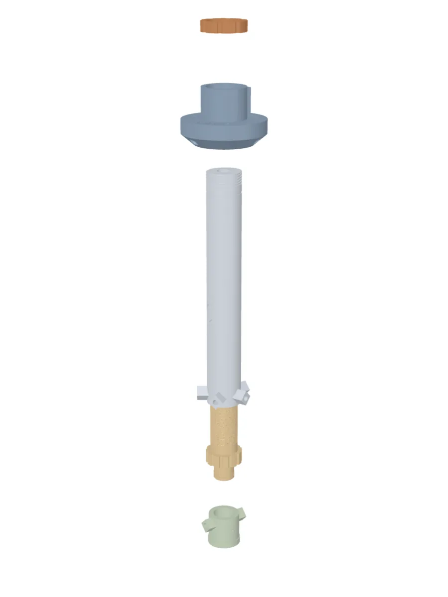
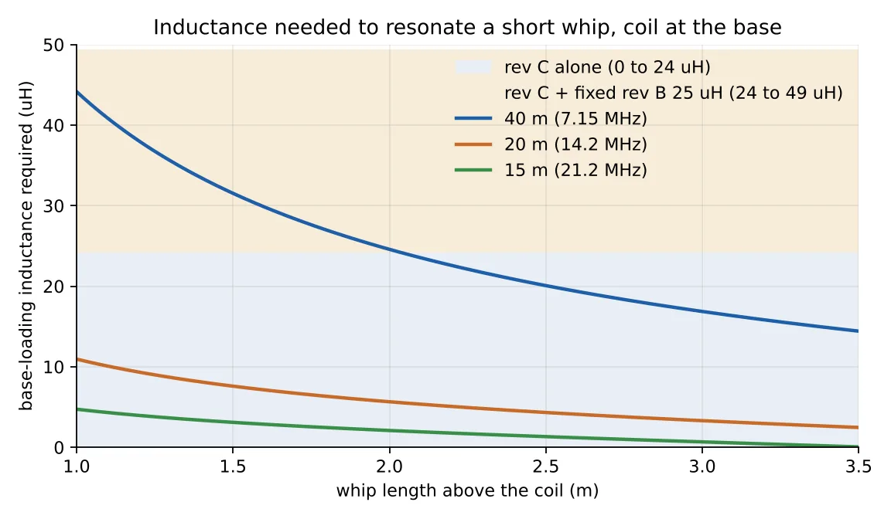

Projects Loading coils
Antennas / 3D printed Files ready, first build next
Printed whip
loading coils
A base-loading coil sits between the mount and a telescoping whip and makes a short radiator resonate on a long band. Three designs share one grooved-form construction: a fixed unit you tune with the whip, a twist-to-tune unit with five ball contacts riding the winding like a nut on a thread, and a tripod-hub unit that puts a 17 ft whip on 80 through 30 m without moving anything that carries load. Every part is printed except the hardware, and every file is below.

- Bands
- 40, 20, 15 m on a short whip; 80 to 30 m on a 17 ft whip
- Power
- 100 W SSB and CW in PETG; 50 W digital, or print ASA
- Connectors
- BNC or SO-239; 3/8-24 whip stud on rev D
- Contacts
- 5/32 in brass balls on tire-valve stems, phosphor bronze springs
- Files
- STL in print orientation, STEP B-rep, parametric generators
- Status
- Modelled and checked; numbers calculated, not yet measured
Every number on this page is calculated, not measured. Expect a real coil to land within about 15 percent of the predicted inductance; that is what the telescoping whip is for. At 100 W on 40 m there is about 2 kV across the coil and more at the whip tip. Do not touch the whip, the sleeve or the bus wire while transmitting, and keep the tip clear of people and anything grounded.
The idea
Why a grooved form
Spaced turns
Nothing to tie down
The form is a hollow printed tube with a shallow half-round helical groove in its outside wall. It is not a thread. The wire sits about half its diameter in the groove and snaps in under tension; the groove holds it and sets the spacing. Pitch is about 1.3 times the wire diameter on purpose. Spaced turns lower the self-capacitance and the turn-to-turn heating, so the coil runs cooler with higher Q. The cost is about 15 percent less inductance per unit length than close-wound, and the form is long enough to absorb that.
The form ODs match Schedule 40 pipe, 26.67 and 33.40 mm, so a piece of PVC can stand in for a printed form in a pinch if you cut your own wire holes. The end caps are sockets, not plugs: a 1 inch square SO-239 flange is wider across the corners than the form, so the cap slips over the form and the flange sits entirely on the cap face. The wire enters through a 2.2 mm radial hole molded into the form wall at each end of the groove, runs into the bore and solders to the connector centre-pin tail. The connector shells float. A conductor tying the two shells together would run parallel to the winding and act as a shorted turn.
At 100 W the RF current through a base-loading coil is around 2 A. 16 or 18 AWG at HF has an effective resistance of a fraction of an ohm over this length, so the dissipation is low single-digit watts spread over 75 to 100 mm of form. PETG, which softens at 75 to 80 C, handles that at SSB and CW duty cycles. For FT8, RTTY or long key-down at 100 W, print in ASA or polycarbonate, or hold power to 50 W. The thermal weak point is the solder joint at the connector tail, not the winding. Never use carbon-fibre or any other conductive filament.
Rev B
The fixed coil
Two caps, one form
Tune with the whip
Grooved form, two end caps, a female connector at each end. Wind as many turns as the band needs and leave the rest of the groove empty. Stack one to three units with male-male adapters for the lower bands. BNC or SO-239, 16 or 18 AWG enamelled wire.

| Version | Wire / pitch | Full groove | 40 t | 30 t | 20 t | Wire needed |
|---|---|---|---|---|---|---|
| BNC, OD 26.7 | 18 AWG / 1.40 mm | 54 t: 25 µH | 18 µH | 13 µH | 8 µH | 4.9 m |
| BNC, OD 26.7 | 16 AWG / 1.70 mm | 44 t: 17 µH | 15 µH | 11 µH | 7 µH | 4.0 m |
| SO-239, OD 33.4 | 18 AWG / 1.40 mm | 54 t: 38 µH | 26 µH | 18 µH | 11 µH | 6.0 m |
| SO-239, OD 33.4 | 16 AWG / 1.70 mm | 44 t: 25 µH | 23 µH | 16 µH | 10 µH | 5.0 m |
Print the caps face down at 0.2 mm with four perimeters; the face is where the screws bite. Print the form standing at 0.12 to 0.16 mm so the groove comes out as a smooth half-round rather than a staircase. PETG, or ASA for outdoor UV. PLA creeps in a hot car. No supports on any part in the package.
Rev C
The twist-to-tune unit
One revolution
One turn of coil
The base is a rev B cap on a longer form wound with bare tinned 18 AWG. The top of the coil floats. The whip connector is on a sleeve that slides over the form, and five spring-loaded brass balls near the bottom of the sleeve press into the valley between turns. Twist the sleeve and the balls track the helix like a nut on a thread, one turn per revolution. Turns below the balls are the antenna; turns above are dead. Active turns are the ones you can see below the sleeve, so a setting is repeatable by count.

Every moving metal part in a contact station is a tire-valve part, bought at any auto parts counter.
The printed boss is tapped .305-32 UNEF, the Schrader stem thread, with a tire valve stem tap. A brass clamp-in stem cut to 18 to 20 mm is the spring housing; it threads in until it bottoms on a shoulder inside the boss. The ball drops in, the spring drops into the stem, and a metal valve cap screws down until it bottoms. Pressure is set by geometry, so there is nothing to adjust and nothing to over-tighten, and any station opens for cleaning with the sleeve on the form. Seated between two turns the ball sits 0.2 mm below the wire crests, so it rides on copper, never on plastic.
The spring is in the RF path, so its material matters. Steel music wire is magnetic; at 14 MHz its skin depth is about 5 µm and a 12-coil spring presents about 4 Ω, which is 3.4 W of heat for the set, inside plastic bosses that soften at 80 C. Phosphor bronze or beryllium copper springs present about 0.2 Ω each and 0.2 W for the set. Stainless 302 lands at 0.65 W and is acceptable at 50 W. Music wire, never.
- Five stations at 72 degrees, each 0.4 mm further along the axis so all five sit in one helical valley
- All five conductive and bused; any one failing is invisible electrically
- 5/32 in brass ball, 4.0 x 0.55 x 25 mm phosphor bronze spring, about 5 N per ball
- Metal valve caps only. Anodised aluminium is an insulator
- 40 mm bearing land above the coil keeps the whip steady at every tap
- Copper tape inside the sleeve shorts the dead turns, like a screwdriver antenna's mast
- Twist, never shove. A hard axial push can skip a turn; twisting cannot
| Band | Turns | One turn moves resonance | Same change at the whip | Whip sensitivity |
|---|---|---|---|---|
| 40 m | 41 | 94 kHz | 7.5 cm | 13 kHz per cm |
| 30 m | 22 | 250 kHz | 13 cm | 19 kHz per cm |
| 20 m | 12 | 625 kHz | 21 cm | 30 kHz per cm |
| 17 m | 8 | 1.05 MHz | 25 cm | 43 kHz per cm |
| 15 m | 5 | 1.6 MHz | 26 cm | 63 kHz per cm |
On 40 m a turn is a third of the band, so the sleeve alone gets within reach of any frequency and the whip finishes. On 20 m and above a single turn is wider than the band: set the turn count from the manual, then do all the tuning with the whip. Record the turn count and whip sections per band on the sleeve with a paint pen.
Rev D
The tripod-hub unit
17 ft whip
80 through 30 m
Rev C put the whip on the moving part. Rev D turns that around. A one-piece printed hub carries the tripod legs and the ground bolt. The printed housing comes up through the hub from below, hangs from a printed collar threaded onto its top, and carries the whip at its top and the five balls at its bottom. The coil form screws up into the housing from below and is turned by hand between the legs. Tuning moves nothing that is loaded. Built around the Chameleon CHA SS17 whip: 17 ft, ten sections, 16 mm base, standard 3/8-24 stud. Any 17 ft stainless whip with the same base fits, and a different base diameter is one parameter in the generator.
![Rev D drawing. A dimensioned cross-section of the assembly: the hub with one leg angled out at 40 degrees, the 284 mm housing passing up through it and hanging from the threaded collar on the boss, with the whip base captured in its top and the five ball stations at its rim, the 249 mm coil form below with its fluted grip, and the swivel cap with its SO-239 at the bottom. Callouts give the set screw, ground bolt, bearing land, copper lining and the two swivel ball stations. Below, the electrical diagram from the coax through the swivel, the active turns and the five balls to the whip.](revd-schematic.webp)

![Section through the housing top in the printed hub, labels in columns either side. Left: the printed collar threaded onto the housing at 3 mm pitch on the boss face, the 34 mm whip-base bore, the ground bolt in a 1/4-20 insert on the hub top with ring terminals under its head, the 40 degree chamfer seat, and the housing passing up through the hub bore. Right: the whip with its 3/8-24 stud, the M5 x 16 set screw through the boss rib into a 1 mm groove, the brass coupling nut captive in the hex pocket, the inside bolt with its ring terminal, and the bus hole 6 mm below the hub.](revd-top-section.webp)
The electrical path is coax centre, swivel SO-239, two balls on a brass ring, the bottom of the coil, the active turns, five balls, bus wire, inside bolt, coupling nut, whip. Nothing slides electrically except balls on copper.
The whip's bending load goes from its base through the housing wall into 65 mm of hub bore; the 3/8-24 stud only holds it down. Fully extended, the SS17 puts 8 N·m on its base at 20 mph and 18 N·m at 30 mph against a base good for 45 to 80 N·m. Bearing stress on the whip bore at 30 mph is about 14 MPa against 50 allowable. The printed hub is forty times less stiff than aluminium, so the whip sways more in gusts; it does not break.
Tripod stability comes first. With 1.7 kg of hardware on a 520 mm foot radius the free-standing tripod tips at about 13 mph, 17 mph with 425 g of ballast in every foot. The stake ears are what hold it above that. Ballast is for the days you do not want to drive stakes.
- Hub: 98 x 29 mm body, 52 x 36 boss, 41 mm bore; three 3/8-16 brass inserts in the chamfer face for the legs, three 1/4-20 on top
- Housing: 284 mm, threaded at the top for the collar, with a 34 mm whip bore, a captive 3/8-24 coupling nut and copper tape above the stations
- Collar: 52 mm, eight flutes, internal thread at 3 mm pitch, four turns engaged; it sits on the boss face and carries the load
- Form: 80 turns of bare 18 AWG at 2.0 mm pitch, 42.8 µH full, with a fluted grip and a brass journal ring
- Swivel cap on the journal: the coax hangs still while the form turns
- Legs: three 1/2 in x 0.058 wall 6061 tubes, 750 mm, with a 3/8-16 stud epoxied in the top
- Printed feet with an angled socket, a ballast pocket and a stake ear
- K4DIA recessed into the hub top and the housing; set your own text in the generator
| Band | Needs | Active turns | One turn moves resonance | Whip sensitivity | Efficiency, 15 Ω ground |
|---|---|---|---|---|---|
| 80 m | 40.4 µH | 76 | 25 kHz | 3 kHz per cm | 7 % |
| 60 m | 17.4 µH | 37 | 73 kHz | 5 kHz per cm | 15 % |
| 40 m | 8.8 µH | 21 | 163 kHz | 7 kHz per cm | 25 % |
| 30 m | 3.1 µH | 10 | 380 kHz | 13 kHz per cm | 43 % |
| 20 m | none | 1, form fully in | 61 % | ||
| 17 to 10 m | none | 1 | Collapse the whip to a quarter wave: 4.14, 3.54, 3.01, 2.64 m | ||
![Rev D leg foot drawing. A dimensioned section through the printed foot: a 46 mm body 70 mm tall with the leg tube in a 12.9 by 22 mm socket angled 40 degrees and entering 7 mm inboard of centre, a 3.4 mm cross hole for the M3 pin, a 36 by 26 mm ballast pocket underneath filled with fender washers on a 1/4-20 bolt whose head is the foot, a 1/4-20 heat-set insert in the pocket ceiling, and a full-height stake ear 16 mm out with a 9 mm vertical hole. Callouts are in a column on the right; dimensions on the left and below.](foot-drawing.webp)
Which band, which whip
What a short whip needs
Base loading
5 mm average whip radius
A whip shorter than a quarter wave looks capacitive at the feedpoint, and the coil cancels that capacitance. The shorter the whip relative to the wavelength, the more inductance it takes, and the less of the input power is radiated rather than burned in the coil and the ground connection. On 15 m a 2.5 m whip is already 70 percent of a quarter wave and needs almost nothing. On 40 m the same whip is 15 percent of a quarter wave and needs about 20 µH, which is most of what rev C has.
The ground connection dominates the losses. With a coil Q around 150 and about 15 Ω of ground loss, a 2.5 m whip comes out near 6 percent on 40 m, 24 percent on 20 m and 43 percent on 15 m. Four to eight radials of 3 to 5 m on the ground, or a counterpoise clipped to the mount, is worth more than anything you can do to the coil. On 40 m with a 1.5 m whip, efficiency drops to roughly 2 percent; it works, but plan on CW or digital.
| Whip above coil | 40 m | 20 m | 15 m |
|---|---|---|---|
| 1.2 m | 38 µH | 9.3 µH | 3.9 µH |
| 1.5 m | 32 µH | 7.6 µH | 3.1 µH |
| 2.0 m | 25 µH | 5.6 µH | 2.1 µH |
| 2.5 m | 20 µH | 4.3 µH | 1.3 µH |
| 3.0 m | 17 µH | 3.3 µH | 0.7 µH |
| 3.5 m | 14 µH | 2.5 µH | none |

Rev D hardware
What you buy
Rough US retail
Late 2026
Eight printed parts and off-the-shelf hardware. Printed parts run about 145 dollars at an MJF print service in PA12 or about 22 dollars of filament at home; hub and feet at six walls and 40 percent infill minimum. The full list with sources, quantities and prices is in the package as BOM.md and BOM.csv. The rev B and rev C lists are in the README.
| Qty | Item | Specification | Purpose |
|---|---|---|---|
| 8 | Printed parts | Hub, housing, collar, form, swivel cap, three feet; MJF PA12 or PETG/ASA | Everything but the legs |
| 7 | Heat-set inserts, hub | 3 x 3/8-16 (HI-316-WH), 3 x 1/4-20 (HI-420-WH), 1 x M5 | Legs, ground bolt and spares, set screw |
| 3 | Heat-set inserts, feet | 1/4-20 | Ballast bolt |
| 3 | Legs | 1/2 in x 0.058 wall 6061-T6 tube, 750 mm, 3/8-16 x 1-1/2 in stud epoxied in | Tripod |
| 1 | Ground bolt | 1/4-20 x 3/4 in stainless, two washers, nut | Radials and coax shield on ring terminals |
| 1 | Coupling nut | Brass 3/8-24, 9/16 in AF, 1-1/8 in long | Captive in the housing; the whip screws into it |
| 1 | Inside bolt | Brass 3/8-24 x 1/2 in with a 3/8 in ring terminal | Bus and lining to the whip |
| 1 | Set screw | M5 x 16, nylon tipped | Stops the housing rotating |
| 7 | Ball stations | 5/32 in brass ball, PB or BeCu spring 4.0 x 0.55 x 25, brass stem .305-32 cut to 18 to 20 mm, stem nut, metal cap, ring terminal | 5 at the housing rim, 2 in the swivel cap |
| 1 | Brass ring | K&S 1 in OD x 0.014 wall tube, cut 8 mm | Journal ring for the swivel |
| 1 | SO-239 | Square flange, 4 x #4 self-tapping | On the swivel cap foot |
| 1 | Tap | .305-32 UNEF tire valve stem tap; 5/16-32 also works, slightly loose | Taps the seven printed bosses |
| 1 | Wire | Bare tinned 18 AWG, about 9.5 m, plus 1.5 m of insulated 18 AWG bus wire | 80 turns; stations to the inside bolt and the SO-239 tail |
| 1 | Copper foil tape | Self-adhesive | Lines the housing bore above the stations |
| 3 sets | Ballast and stakes | 1/4-20 x 1-1/2 in bolt with 1-1/4 in fender washers, or lead; 8 mm tent stakes | Feet |
Take it with you
Files
Print it, build it
Measure it, tell me
All STLs are exported in print orientation with no supports on any part. The STEP files are true B-rep solids with swept helical grooves, for CAD edits; threads are not modelled and every threaded hole is at tap-drill size. Each generator proves its output is a closed, printable volume before writing it, and the QA script checks every STL against its STEP solid and checks part-to-part fit, hole depths against the inserts, and the leg angles read from the faces.
-
Complete package
Every STL and STEP for rev B, rev C and rev D, the machined aluminium hub as an option, the parametric generators and the QA script, the drawings, the operating manual, the README with print settings and assembly, and the bill of materials.
Download -
Operating and deployment manual
Which band, which whip, how many turns. Sleeve settings for rev C and turn counts for rev D, what one turn does on each band, efficiency against a quarter wave, voltage and power, wind and load limits, guying and radials.
Download -
Rev D assembly manual
A picture for every step, rendered from the same STLs you print, with the hardware for the step in a box and a line of text only where a picture cannot carry it. Inserts, legs and feet, tapping, the housing internals, the seven ball stations, winding, the swivel cap, final assembly, then the electrical checks and the first tune-up.
Download -
Bill of materials
Every printed part and every piece of hardware for the tripod-hub unit, with sources and rough prices, for a spreadsheet.
Download
Still to come
What goes up next
- The first printed set, and the measured inductance against the Wheeler numbers above.
- SWR sweeps per band with the turn counts that actually landed, on the SS17 and on a short whip.
- How the ball stations wear, and whether the copper lining earns its keep.
- One male end on the fixed unit, to do away with the adapters.
- A weather lip on the cap for a heat-shrink sleeve over the winding.
Revision history is in the README. Rev A, October 2026: end caps sized to real pipe and real connector flanges. Rev B: printed grooved form. Rev C: tunable sleeve with five ball-contact stations. Rev D, November 2026: tripod hub, swivel feed and the 80-turn form for a 17 ft whip, then made all-printed with brass inserts, every drawing callout measured against the STEP by script, and the housing changed to enter from below and hang from a threaded printed collar. If you build one, send a note to the address below with what you measured.